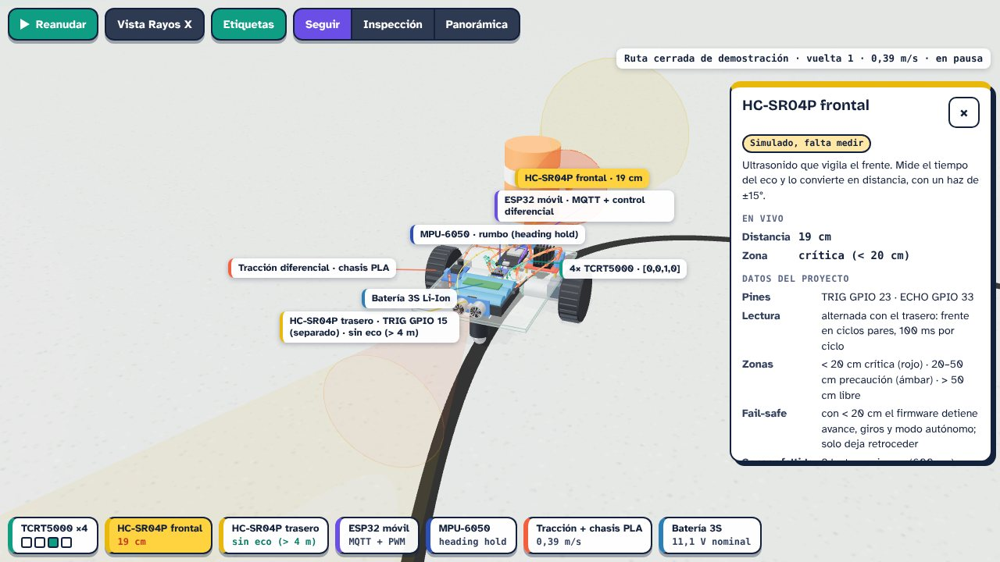

P02 · Inspector de hardware
Maneja el robot y mira lo que siente
Para los curiosos
- Manejo: el mismo del Simulador 1 (P04): PWM 0,8 al avanzar, 0,45 de diferencia al girar y rampa de 80 ms. Con menos de 20 cm al frente solo deja retroceder, como el firmware.
- Consola: velocímetro en la escala del radar (P03, hasta 0,46 m/s) y los 4 TCRT5000 (S1…S4, 18 mm entre sí, ADC1 GPIO 36, 39, 34 y 35).
- Piezas: ESP32, L298N con 2× JGA25-371 Speed 200 y encoders (11 PPR × 1:21,3), 2× HC-SR04P (frente y atrás, TRIG atrás en GPIO 15), MPU-6050 y batería 3S.
- Todo es simulación (SIL); las mediciones con el hardware real van en la ficha HIL [PENDIENTE DE MEDICIÓN FÍSICA].


